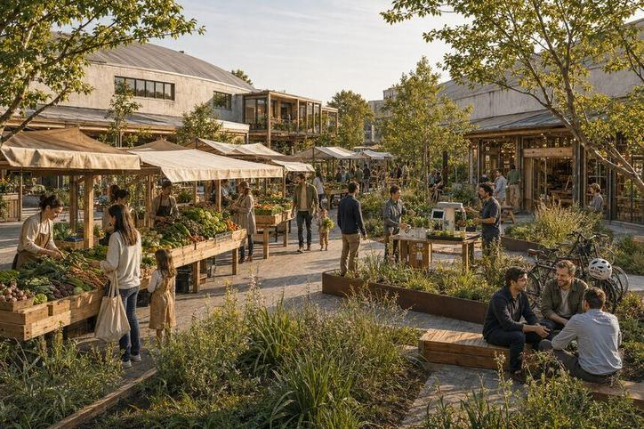
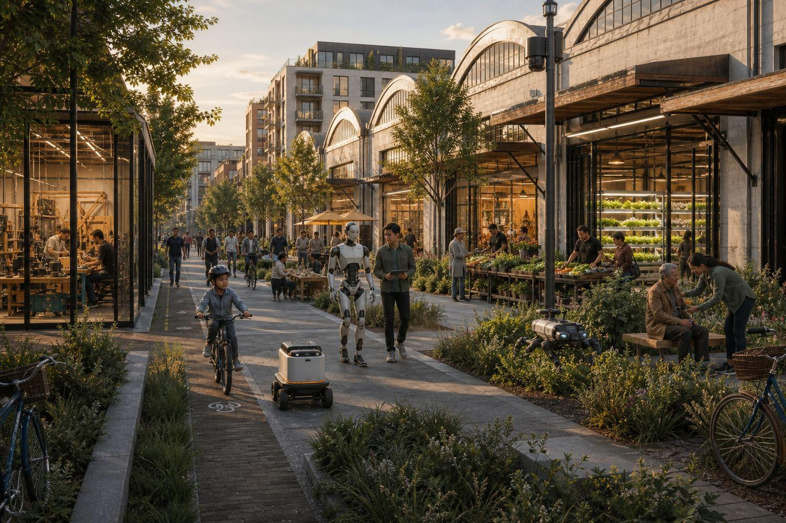
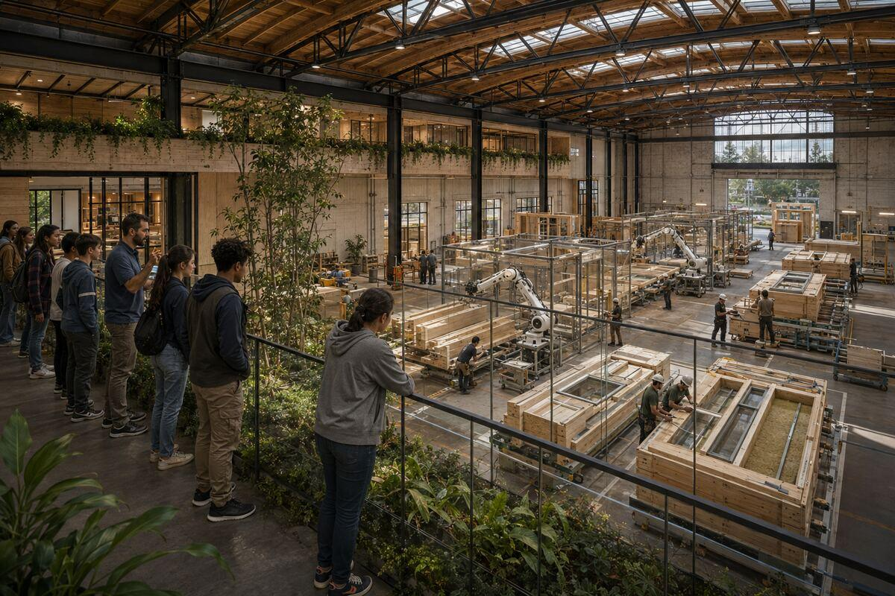
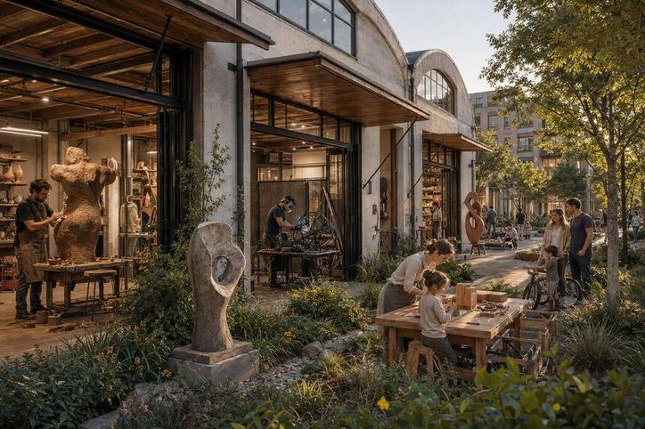
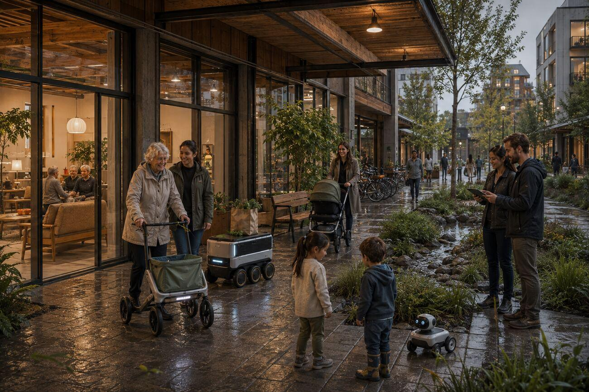
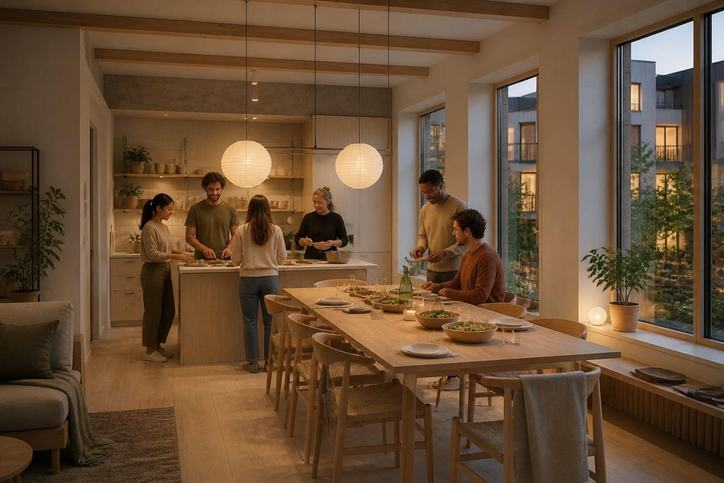

Farming, health care, logistics, manufacturing and the built environment draw on much of the same engineering. Oregon has all of it, spread thinly along one corridor.
An innovation district strategy for Salem: how to make this a place where physical AI companies form and hire, and where the people they hire can afford to live.
The chicken and egg
A company needs engineers it can hire before it will move here. An engineer needs more than one employer in town before they will move, because one job is one point of failure. Each side waits on the other.
Who moves first
Firms and individuals need a business case. Institutions can act without one, and in every district we studied a university or a public body was in from the start.
What they set up
A neutral entity holding the ground. Test and fabrication space shared across firms. Housing inside the district rather than across town.
What it should produce
Companies forming and hiring here, and land values that rise across the whole area rather than one site. That is what pays for the phase after it (how that works).
How we would know
Whether the people already living in Salem end up better off. The recorded failure of these districts is homes that get expensive and push those people out. The study plan sets out the six studies.
Oregon holds the parts of this industry and cannot assemble them. Companies do not relocate to a place without a labor market. Engineers do not move for a single job, because if it ends they need a comparable one nearby rather than a house to sell. And the technical people already here often work remotely for companies elsewhere, so their presence produces little local company formation. Neither side can move first. Meanwhile Oregon’s manufacturing employment was about 178,900 in 2025 and fell by roughly ten thousand in the year to June 2026 (Oregon Employment Department; the figures sit on Housing Supply).
Underneath that sits a slower leak. Oregon is good at the top of the funnel: it attracts technical people, educates them, and keeps about 64% of its university graduates employed in the state five years later: of 37,551 bachelor’s graduates in the 2013 to 2015 cohort, 24,000 were still working in Oregon after five years (Oregon Employment Department, November 2025). Then it loses them. An analysis of Census data released in January shows Oregon losing residents aged thirty to fifty faster than it gains them, with housing cost among the causes, while the people arriving earn considerably less than the people leaving (Oregon Journalism Project, March 2026). Because the state depends on income tax more than most, every departure is a revenue loss as well as a skills loss.
Firms and individuals both need a business case before they move, and at the start neither has one. Institutions do not need a business case. In every district we studied a public body or a university was among the founders rather than a later arrival: Stockholm and Ericsson set up a neutral foundation together in 1985, five St Louis anchors pooled about $29 million, Berlin physically relocated Humboldt’s science faculties onto the site. The cases.

Software that senses the physical world, decides, and acts on it through hardware. A weeding robot, a warehouse handling system, a surgical assist arm and an autonomous shuttle are built by different industries, and underneath they are the same shape of problem.
The name is unsettled. These all describe the same field.
We use physical AI on this page because it is the term most readers arrive with. Nothing here depends on which one you use.
Because several things that decide whether this work succeeds are easier to supply in one place than in five. These six come out of the districts we studied, and each one has a case behind it.
Test rigs, fabrication and instrumentation are too expensive for one firm and too specific to rent. imec in Leuven was funded by the Flemish government as a neutral institute, and because no company owns it, rival chipmakers all fund and use it.
A perception problem in an orchard and a perception problem in a warehouse are often the same problem. Kista's first act was one shared building putting university labs beside companies. Berlin moved Humboldt's science faculties onto the Adlershof site, and about 1,000 companies grew around them.
Districts act as incubator and landlord at once, with small tenancies and room to fail cheaply. Cortex grew 406 companies on a St Louis brownfield. Cambridge Science Park seeded a cluster now spanning thousands of firms. Both took about two decades.
Engineers move between these domains more easily than the industries do, so a district lets someone change problem without changing city. Eindhoven's Brainport region holds roughly 73,000 technology jobs and about 40% of all Dutch research and development.
Five anchor institutions pooled about $29 million to start Cortex and paired it with tax increment financing. Barcelona used rezoning itself as the financing tool at 22@. Neither move is available to a single building.
These products run in the thousands to tens of thousands a year. One firm at that volume is a nuisance to a component supplier. Several industries at that volume in one place is a customer worth retooling for.
Culture and community are treated in this literature as underwriting rather than decoration, and Medellín's Ruta N seated citizens as a full partner from the start. The honest counter-argument is that domains can diverge faster than they converge, shared facilities are harder to run than they look, and putting companies near each other can produce meetings rather than results. Cortex took two decades. The cases, and how six of them scored against seven patterns.
Homes inside a district are part of the original Brookings definition of the term, and the record shows them delivered unevenly: a minority built them in from the start, several added them decades later, and a few have none at all. Salem's version puts them in at the beginning, which is the subject of the river district.

The parts are already here, spread along about a hundred miles of the Willamette between Portland and Eugene. Salem sits in the middle of them.
The Hillsboro cluster, including Intel, Lattice, Qorvo, Thermo Fisher and Siltronic. Sensors, boards and precision assembly at scale.
A research base at Oregon State, and a humanoid robot factory operating in Salem's Mill Creek employment area.
One of the most diverse farming valleys in the country, with about 220 commodities grown and 40,000 farms in the state.
A regional hospital system in Salem, and an aging state population that makes the demand for care technology real.
An established sector, with the fabrication and material knowledge that off-site building depends on.
Working farms, an interstate freight corridor, factories and clinics within a short drive of each other. This is what a simulator cannot supply.
What the corridor lacks is one place where these meet. The corridor, company by company.

West Salem, in industrial buildings that are already standing, starting with one of them. Five moves, in order. The order is the part that matters: across ten turnarounds we studied, the places that worked spent cheap and fast first and drew heavy capital only after early wins proved demand. Sequence beats scale.
A champion institution, a university, the City, and employers in one room, agreeing what is worth testing.
Cortex, Brainport or the Brooklyn Navy Yard. The people who would build this should see one running before committing to it.
A neutral organization holding the ground and the tenancy decisions, with the university, the public sector, industry and the community represented.
One tenant with a reason to be here, and a financing mechanism. In Salem that means urban renewal and tax increment.
One adapted building, occupied, with the results published. Adaptive reuse comes first because it is faster and cheaper than new construction and because the buildings are already there.
Five of the six districts in our scoring table put a neutral entity fully in charge of the mission, and two of them, Kista and Newlab, began with a single shared building. How other districts were built. On how the ground itself creates value, District Value Creation.

Districts are usually measured by what gets built. The question that matters here is whether the people already living in Salem end up better off, so these are the figures we would publish, on a fixed schedule, whichever way they come out.
Formed, moved in, or expanded, and still operating. Announcements are easy; survival is the test.
People who took a job here over one elsewhere, and were still here three years later.
For Salem as a whole, not for the district. A district that raises its own average and nothing else has failed.
Whether the businesses already trading nearby are still trading, and whether new ones are locally owned.
Units delivered, and what share of them a household on a local wage can rent or buy.
Measured against the Salem average, which is the test of whether the place works as designed.
The full measurement set, drawn from Michael Shuman's twelve local-economy indicators, sits on District Value Creation.

Everything above draws on research we have published in full, including the parts that argue against us. Each page carries its sources.
Districts that were built, six of them scored against seven patterns, plus the partners behind each and how the buildings and money came together. Read it.
The companies, institutions and employment figures along the Willamette, company by company, with what we left out because we could not source it. Read it.
Ten local economic development turnarounds, the ten patterns they share, what each cost, and how long each actually took. Read it.
Seven comparable districts, where the value is actually made, who funds the infrastructure, and the twelve indicators we would be measured against. Read it.
An independent panel convened at the City of Salem’s request on this exact industrial area, and where our own premises differ from theirs. Read it.
A running scan of the car-light, landscape-led districts cities and capital are committing to now, and what each one signals. Read it.

Oregon already holds the parts of this industry and the ground to test it on, spread along a hundred miles with no single place where they meet. Salem sits in the middle, has the buildings, and has room for the homes. That is the argument, and it rests on evidence from districts that were built, most of which took about twenty years.
What we do not know is whether the market supports it, whether the ground and its infrastructure can carry it, what the public sector would actually do, and how many jobs it would produce. Those are the market study, the infrastructure planning study, the public private partnership work and the job creation study in the study plan, and they should be commissioned by a public or institutional sponsor rather than by us, then published in full whichever way they come out.
Three of the four are treated here, and the public private partnership work is taken up under Where, when and how. The market study would establish what a first phase can be financed against today, and separately what would have to change to support more. The infrastructure planning study would sort every finding into no material issue, solvable at a known cost, or a possible fatal flaw. The job creation study would produce a number with its method published beside it, because a figure produced before the study is a figure produced by whoever wants it to be large.
If you build this technology for a living and think part of the argument is wrong, that is the most useful thing you could tell us. erik@nowcitylabs.com